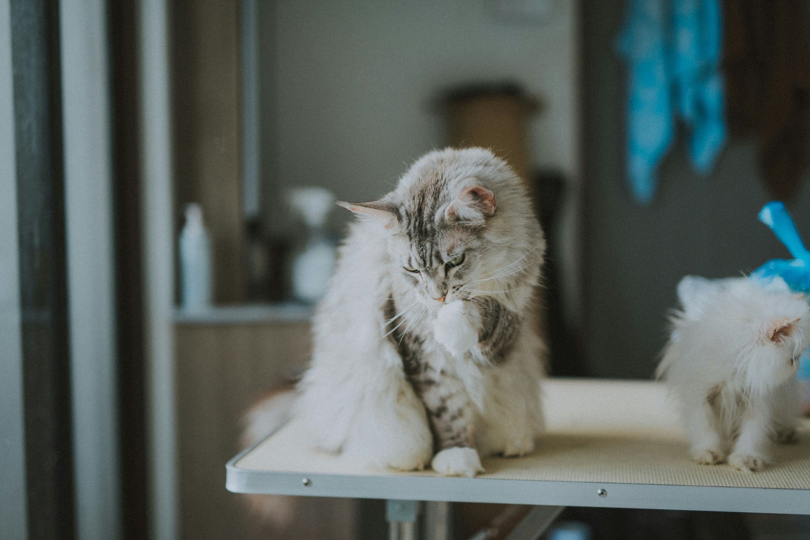

Feeding
Feed your cat food that matches its age and health needs. Always provide fresh water. Washing their bowls on a daily basis can also prevent acne on their chins!
A beginner's guide to happy, healthy cats.

Cats are fairly independent animals, but they still need daily care and attention. Providing proper food, fresh water, a clean litter box, and regular playtime helps keep them healthy and happy.
Feed your cat food that matches its age and health needs. Always provide fresh water. Washing their bowls on a daily basis can also prevent acne on their chins!
Brush your cat regularly to reduce shedding and prevent tangles. Long-haired cats usually need brushing every day.
Interactive toys help cats stay active and mentally stimulated. Play for at least 15–20 minutes every day.
Regular veterinary checkups help detect health problems early and keep vaccinations up to date! Have your cat get used to its carrier.
Scoop the litter box every day and completely replace litter regularly. Not scooping regularly for your cat means not flushing the toilet after using it.
Every cat is going to be different! Spend time learning your cat's personality and respect its boundaries. Over time, your cat will warm up to you. Patience is KEY!
| Task | How Often? |
|---|---|
| Feed | Twice Daily |
| Fresh Water | Every Day |
| Playtime | 15–20 Minutes |
| Scoop Litter Box | Daily |
| Brush Coat | 2–7 Times Weekly |
Cats enjoy routines. Feeding and playing with them at roughly the same time every day helps them feel comfortable and secure.
Healthy cats love to play and communicate in different ways. Listen to some meows, or watch a playful kitten enjoying its favorite toy!